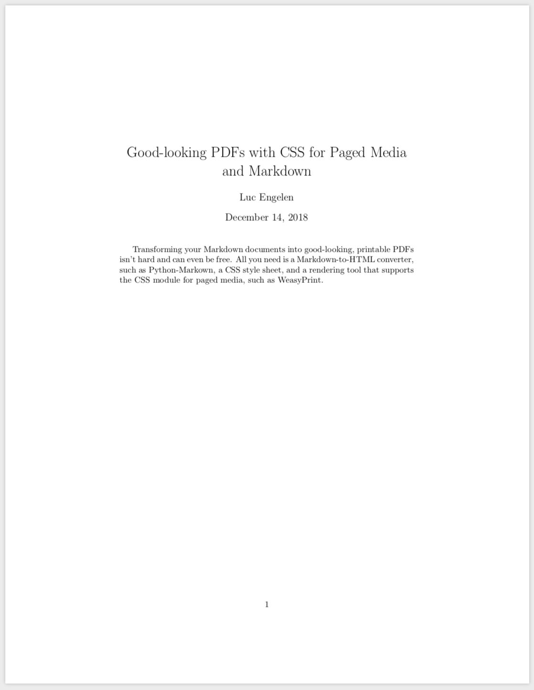

This post first appeared on Kabisa's Tech Blog.
Before I started making money as a web developer, I was a web developer making money as a PhD student. Like many others in academia, I used LaTeX for most of the documents I produced. I wrote a number of research papers with LaTeX, a PhD thesis, and when it was time to leave academia behind, I wrote a CV with LaTeX. Suffice to say, I’m a big fan.
If you’ve never heard of LaTex, consider the following document:
\documentclass{article}
\usepackage[pdfborder={0 0 0}]{hyperref}
\title{Good-looking PDFs with CSS for Paged Media and Markdown}
\author{Luc Engelen}
\begin{document}
\maketitle
Transforming your Markdown documents into good-looking,
printable PDFs isn't hard and can even be free.
All you need is a Markdown-to-HTML converter, such as
\href{https://python-markdown.github.io/}{Python-Markown},
a CSS style sheet,
and a rendering tool that supports the CSS module for paged media,
such as \href{https://weasyprint.org/}{WeasyPrint}.
\end{document}
The end result of typesetting this annotated piece of text will look like this:

LaTeX is advertised as a high-quality typesetting system, a claim that I can only agree with. It’s really nice to be able to focus on the textual content and structure of documents and leave most of the appearance to a specialized tool. An added benefit of writing documents in (annotated) plain text is that you can easily track changes in documents using version-control system such as Git. Although you can collaborate on Word or Pages documents, for example, nothing beats tracking changes commit-by-commit with line-by-line diffs or working on the same document in parallel on different branches. Once you know what you’re doing, LaTeX is great.
LaTeX is also, however, a massive piece of software that takes quite some time to get to know. If you don’t really need professional-quality typesetting or don’t plan to include a lot of mathematical formulas in your documents, it’s hard to justify installing three gigabytes of software and spending many hours to get to know this particular tool.
At Kabisa, we use Google Docs is to create resumes, quotations, etc. Collaborating on these documents works reasonably well, and the end results are fine. Inspired by LaTeX and static site generators, I looked around a few times to see whether we could use Markdown as a basis for this sort of documents instead, hoping to improve both collaboration and the looks of the end results. Things didn’t look very promising for a long time, until I stumbled upon WeasyPrint by coincidence.
WeasyPrint is free and open-source software that you can use to generate PDF documents from HTML and CSS. Clearly, you could simply print a webpage to PDF in any browser, but you don’t have any control over the styling of page numbers in that case, and you can’t define headers and footers. WeasyPrint supports a CSS module for which browser support is limited: CSS for Paged Media. Although browsers do support the CSS properties page-break-after, page-break-before, and page-break-inside from this modules, they don’t support the CSS rules for page-margin boxes. It’s the latter set of rules that make it possible to define and style headers and footers, page numbers, covers, and so on. The end results you can achieve with this subset of CSS is quite impressive, as can be seen by looking at the samples provided by WeasyPrint.
There are a number of competitors, but most of them are far from free. Vivliostyle is a notable exception that’s also worth looking into.
Among other things, CSS for paged media allows you to target specific parts of the margin around each page. For example, the @top-right rule below specifies that the top-right part of the margin of each page should contain a logo.
@page {
@top-right {
background: url(kabisa-logo-two-color.svg) no-repeat bottom;
background-size: 5cm;
content: "";
width: 5cm;
}
}
The @bottom-right rule below specifies that the bottom-right part of the margin of each page should display the page number and the total number of pages. The counters page and pages are available by default, but it’s also possible to define custom counters.
@page {
@bottom-right {
content: counter(page) " of " counter(pages);
}
}
The @bottom-center rule below specifies that the center of each bottom margin should contain the value of the string heading. The value of this string is updated each time an h2 element is encountered. The property page-break-before is an example of a CSS property that most browsers do support. It is used to ensure that each h2 element starts a new page.
@page {
@bottom-center {
content: string(heading);
}
}
h2 {
page-break-before: always;
string-set: heading content();
}
These examples only show part of what you can achieve with CSS for paged media. Rachel Andrews provided an excellent overview of all the possibilities for Smashing Magazine.
Being able to style HTML for print with CSS is only a part of the story if you’re looking for a convenient way to write good-looking documents. I suppose most people wouldn’t be to enthusiastic about writing documents in plain HTML. HTML is fine for web pages, but markup languages such as reStructuredText, AsciiDoc, and Markdown are better suited for documents like reports, CVs, quotations, notes, and books. Although there’s not a clear winner among these three for me personally, I decided to build some tooling around Python-Markdown because Markdown seems to be the most popular.
If you’ve never heard about Markdown, consider the following document:
# Good-looking PDFs with CSS for Paged Media and Markdown
Transforming your Markdown documents into good-looking,
printable PDFs isn't hard and can even be free.
All you need is
* a Markdown-to-HTML converter, such as
[Python-Markown](https://python-markdown.github.io/),
* a CSS style sheet, and
* a rendering tool that supports the CSS module for paged media,
such as [WeasyPrint](https://weasyprint.org/).
Markdown converts this annotated text into the following HTML:
<h1>Good-looking PDFs with CSS for Paged Media and Markdown</h1>
<p>
Transforming your Markdown documents into good-looking,
printable PDFs isn't hard and can even be free.
All you need is
</p>
<ul>
<li>
a Markdown-to-HTML converter, such as
<a href="https://python-markdown.github.io/">Python-Markown</a>,
</li>
<li>a CSS style sheet, and</li>
<li>
a rendering tool that supports the CSS module for paged media,
such as <a href="https://weasyprint.org/">WeasyPrint</a>.
</li>
</ul>
There’s an extension for Python-Markdown, Attribute Lists, that allows you to define attributes on the HTML elements in Markdown’s output. This extension comes in handy when you want to apply CSS to the resulting HTML.
I’ve created a Python script that ties Python-Markdown and WeasyPrint together, including two examples that demonstrate the possibilities of this tool chain. You can use this script to convert documents in one go or to watch a Markdown document and a CSS style sheet for changes and convert them on the fly. If you don’t feel like installing all the dependencies, you could build a Docker image and run the tool in a container instead.
Published: 2018-12-13
Tagged: Markdown CSS for Paged Media